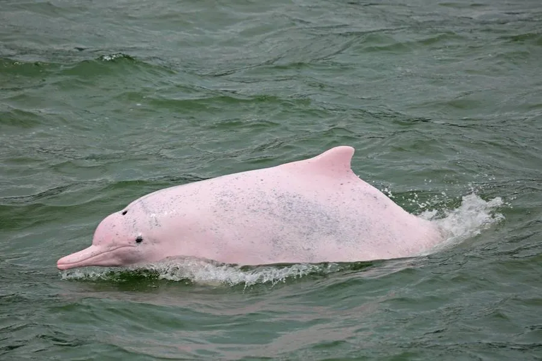

哺乳动物 · 动物界
中华白海豚 Sousa chinensis

中国东南沿海的标志性海豚，成年个体体色粉白，常在河口咸淡水交汇处活动，是近岸生态的健康指示物种。
- 分类
- 门脊索动物门纲哺乳纲目偶蹄目科海豚科属白海豚属
- 栖息环境
- 热带、亚热带的近岸浅海与河口咸淡水交汇水域，水深多不足 20 m
- 地理分布
- 从中国东南沿海、东南亚到印度洋东岸，珠江口与厦门湾为重要栖息地
- 保护级别
- IUCN 易危（VU）；中国国家一级保护动物
物种志
中华白海豚体长 2.0–2.5 米，体重约 150–250 kg，背鳍小而后倾，体形粗壮。幼豚体色偏灰黑，随年龄增长逐渐变浅，成年个体多为粉白色，皮肤上常带灰色斑点；剧烈运动时皮下血管充血，使体表呈现出明显的粉红色。
中华白海豚栖息于热带、亚热带的近岸浅海与河口，尤其喜欢珠江口、厦门湾等咸淡水交汇水域，主食鲻鱼、青鳞鱼等中小型鱼类，也用回声定位在浑浊水中探测鱼群。它们通常结成 3–20 只的小群，季节性游弋，但珠江口种群长期定居于固定水域。雌豚妊娠期约 10–11 个月，每胎 1 仔，初生幼豚体长约 1 米。填海、航运、渔业误捕和水污染是主要威胁，全球种群数量可能只有数千头。
形态与习性
- 食性鲻鱼、青鳞鱼等中小型鱼类，靠回声定位捕食
- 体长2.0–2.5 m，初生幼豚约 1 m
- 体重约 150–250 kg
- 寿命约 30–40 年
- 繁殖妊娠期约 10–11 个月，每胎 1 仔
- 活动节律白天较活跃，常结群活动
- 体色变化幼年灰黑，成年转为粉白
趣味知识
- 中华白海豚成年后呈粉白色，运动时血管充血会让体色更红。
- 它们常用 3–20 只的小群在河口活动，珠江口有定居种群。
- 在浑浊的河口水中，它们依靠回声定位寻找鱼群。
- 幼豚出生时体色灰黑，随年龄增长才逐渐变成粉白色。